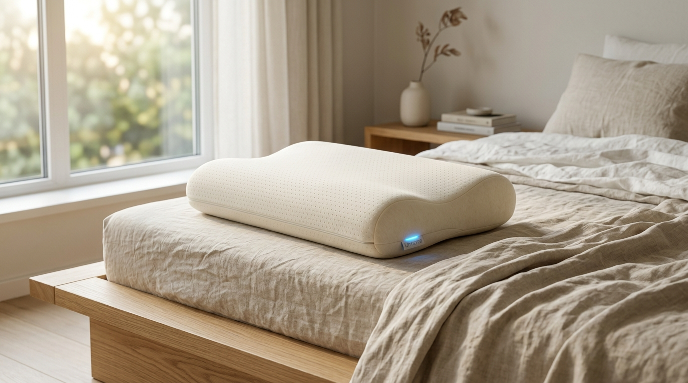

ยกระดับการนอนหลับ ติดตามและแชร์สถิติสไตล์ Strava
หมดปัญหานาฬิการัดข้อมือตอนนอน หมอนอัจฉริยะ Unnoise ตรวจจับคลื่นหัวใจ การหายใจ การกรน และระยะหลับลึก พร้อมซิงค์สถิติเข้าสู่ Unnoise Club ให้คุณกดให้ Kudos ชื่นชมการนอนที่ดีของเพื่อนในคอมมูนิตี้

Interactive Sleep Dashboard Simulator
คลิกสลับสถานะจำลองด้านล่างเพื่อทดสอบการตอบสนองของเซนเซอร์หมอน Unnoise ทั้งในคืนที่หลับลึกสมบูรณ์แบบ และคืนที่มีการตรวจพบเสียงกรน
พักผ่อนเต็มอิ่ม
ปรับแนวทางเดินหายใจ
ตลอดการนอน 7 ชม. 15 นาที ร่างกายของคุณเข้าสู่สภาวะหลับลึก (Deep Sleep) ถึง 38% ซึ่งสูงกว่าเกณฑ์เฉลี่ยถึง 15% หมอนรองรับแนวกระดูกต้นคอได้สมดุล อุณหภูมิผิวสัมผัสคงที่ 24.8°C ไม่พบการตื่นกลางดึก
สถิติปริมาณการนอนรายสัปดาห์ (Weekly Sleep Volume)
วิเคราะห์ปริมาณชั่วโมงการนอนและความสม่ำเสมอในรอบสัปดาห์ คล้ายการติดตามไมล์สะสมใน Strava ช่วยให้คุณรักษาวินัยการนอนได้อย่างสมบูรณ์แบบ
Unnoise Sleep Club (คอมมูนิตี้การนอน)
เชื่อมต่อกับเพื่อนและคอมมูนิตี้คนรักสุขภาพ แลกเปลี่ยนเคล็ดลับการหลับลึก และกดให้ Kudos เป็นกำลังใจให้เพื่อนทุกเช้า
คืนฟื้นฟูกล้ามเนื้อหลังวิ่งเทมโป้ 10K 🏃♂️
หมอน Unnoise ปรับความสูงกระดูกคอได้พอดีมาก หัวใจเต้นช้าและสม่ำเสมอ 52 BPM หลับลึกเกือบ 3 ชั่วโมง ตื่นมาไม่มีอาการเมื่อยต้นคอเลย พร้อมลุยงานต่อ!
Rest Day Sleep Session สมบูรณ์แบบ
เปิดเสียงคลื่น Pink Noise ในตัวหมอน ช่วยให้ตัดเสียงรถยนต์ด้านนอกได้เงียบสนิท เข้าสู่สภาวะหลับภายใน 12 นาที คะแนนการนอนขึ้นสู่จุดสูงสุดในรอบเดือน
ทดสอบการลดเสียงกรนด้วยถุงลมไมโครแอร์แบ็ก
ช่วงตี 2 ระบบตรวจพบเสียงกรน 46dB หมอนค่อยๆ ปรับยกขึ้น 1.8 ซม. ผลคือเสียงกรนหยุดลงภายใน 4 นาทีโดยที่ผู้ทดสอบไม่ตื่น ประทับใจมากครับ
เสียงบำบัดกลบเสียงรบกวน (Audio Therapy Simulator)
หมอน Unnoise มีตัวส่งคลื่นเสียงนำกระดูก (Bone Conduction) ซ่อนอยู่ด้านใน ส่งคลื่นเสียงความถี่ผ่อนคลายตรงสู่กระดูกกะโหลกศีรษะโดยไม่รบกวนคนข้างเคียง ทดลองฟังคลื่นเสียงสังเคราะห์จริงบนเบราว์เซอร์ได้ทันที
โครงสร้างกายวิภาค 4 ชั้นของ Unnoise
ผสานวัสดุธรรมชาติเกรดพรีเมียมเข้ากับเทคโนโลยีตรวจจับระดับนาโน เพื่อการพักผ่อนที่ดีที่สุดในทุกสัมผัส
Tencel Silk Cover
ปลอกหมอนผ้าใยยูคาลิปตัสผสมไหมธรรมชาติ ระบายอากาศรอบทิศทาง ลดอุณหภูมิผิวสัมผัสลง 1.5°C ช่วยให้ร่างกายเข้าสู่ระยะหลับได้เร็วขึ้น 2 เท่า
Organic Charcoal Latex
ยางพาราธรรมชาติผสมผงถ่านชาร์โคล รองรับแนวกระดูกต้นคอตามหลักสรีรศาสตร์อย่างเป็นธรรมชาติ ป้องกันไรฝุ่นและยับยั้งแบคทีเรียได้ 99.9%
BCG Micro-Sensors
แถบเซนเซอร์ตรวจวัดแรงกลชีวภาพ (Ballistocardiography) ดักจับจังหวะการบีบตัวของหัวใจและการขยายตัวของทรวงอกได้แม่นยำ ไร้คลื่นวิทยุรบกวนสมอง
Quiet Micro-Airbags
ห้องถุงลมไมโครที่พองตัวและยุบตัวอย่างนุ่มนวลและเงียบสนิท ปรับมุมองศาศีรษะขึ้นอัตโนมัติเมื่อเริ่มมีอาการกรน เพื่อเปิดทางเดินหายใจทันที
รุ่นสินค้าและราคาจัดจำหน่าย
โมเดลผลิตภัณฑ์เพื่อสุขภาพการนอน ออกแบบมาเพื่อให้ทุกคนเข้าถึงการนอนหลับที่มีคุณภาพ
Unnoise Essential
สำหรับผู้ที่ต้องการตรวจวัดสุขภาพการนอนและสรีระที่ผ่อนคลาย
- เซนเซอร์วัดอัตราการเต้นของหัวใจ BCG
- วัดรอบการหายใจและระยะการนอน 4 สเตจ
- เมมโมรี่โฟม Ergonomic Contour
- ซิงค์ข้อมูลเข้า Unnoise Club Feed
- ไม่มีระบบถุงลมปรับแก้นอนกรน
- ไม่มีลำโพง Bone-Conduction
Unnoise Pro Sound & Air
รุ่นฟูลออปชันเพื่อสุขภาพการนอนระดับสูง ตัดเสียงรบกวนและลดการกรน
- ทุกฟังก์ชันในรุ่น Essential
- ระบบถุงลมปรับความสูงอัตโนมัติเมื่อกรน
- ลำโพงคลื่นกระดูก Bone-Conduction Masking
- เสียงบำบัด White / Pink Noise ในตัว
- แดชบอร์ด Weekly Volume & Strava Feed
- ปลอกหมอน Tencel Silk ควบคุมอุณหภูมิ